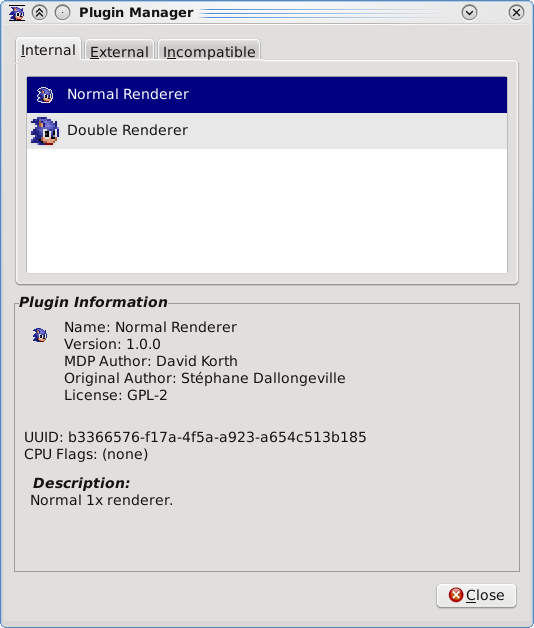

Gens/GS - Plugins - Plugin Manager

The Plugin Manager allows you to view what plugins are currently loaded
in Gens/GS, along with various information about the plugins. You can
also see any plugins that weren't loaded due to compatibility issues.
Plugin information displayed:
- Name: Plugin name.
- Version: Plugin version.
- MDP Author: Author of the MDP version of the plugin.
-
Original Author: Author of the original
version of the plugin. This may be used in cases where third-party
plugins are ported to the MDP plugin specification.
- Website: Plugin website.
- License: Plugin license.
- UUID: 128-bit UUID that uniquely identifies a plugin.
-
CPU Flags: Supported and required CPU flags.
Required flags are indicated by bold or an asterisk.
- Description: A short description of the plugin.